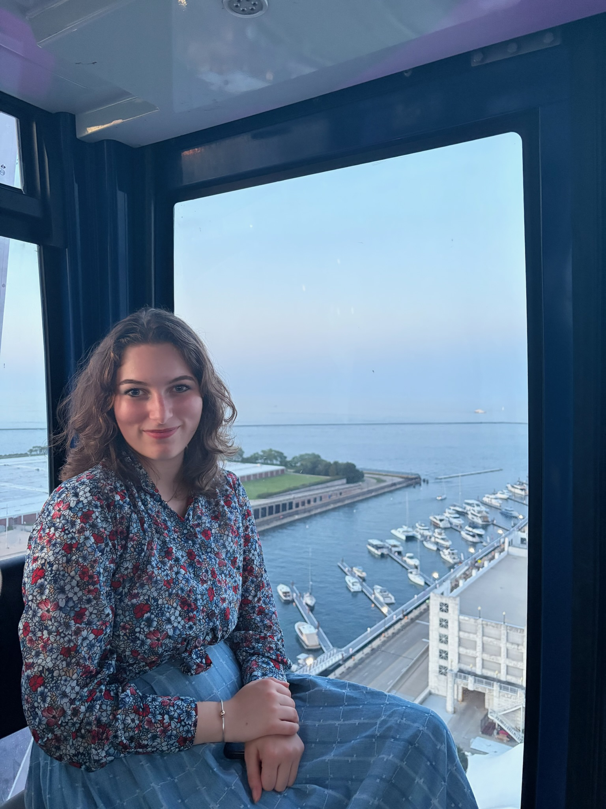

Hello! My name is Lyra Moscuzza
Though originally born in Massachusetts, I have been a Washington resident for almost ten years.
While enrolled in Washington's Running Start Program, I earned my high school diploma from Sumner High School and my Associates of Arts from Green River College in 2025. It's here that, after being inspired by my instructors, I discovered my passion for physics education. I now attend the University of Washington—Seattle, where I am working towards earning a Bachelor of Science in Teaching Physics. I hope to graduate in 2028.
For the last year, I've worked with the Physics Education Group (PEG) at The University of Washington, and I have recently started working with the Physics Equity and Access Research Lab (PEARL) at The Ohio State University. After completing my undergraduate degree I hope to pursue a PhD in Physics, focusing on Physics Education Research (PER).
At both Green River College and The University of Washington, I became highly involved with the Society of Physics Students (SPS). My roles with these institution's respective chapters helped me develop my talents and interests in event organizing and science outreach. Becoming an ambassador for the STEM Public Outreach Team (SPOT), and volunteering with STEMPals, has allowed me to further apply these skills to help bring science to a greater community.
In my free time, I've been enjoying astrophotography, taking care of my pet shrimps (the Jacques!), and beach combing. Lately, however, I've been trying to explore all kinds of new hobbies and build all kinds of new skills: make sure to take a look at my personal blog if you're interested in what I've been up to!